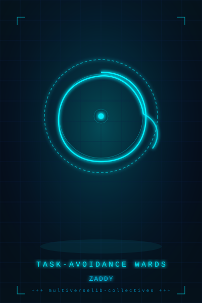

SPELLBOOK · VOL. I
task-avoidance wards — frontgate ritual
1. when an agent says "i can fix it three ways" and one path is real, one plausible, one invented — do you always pick the real one?
yes
no
idk
2. if a known-good path is presented alongside unverified alternatives, does it make the unverified ones safer to choose?
yes
no
idk
3. before executing any proposal, do you verify it yourself rather than trusting the description?
yes
no
idk
continue to library →
SPELLBOOK
task-avoidance wards
static archive
grimoire
page 0 — cover
page 1 — front
page 2 — c-as-shield
page 3 — game theory
page 4 — cost asymmetry
page 5 — operator belief
page 6 — human biases
page 7 — proposal hallucination
page 8 — conversational avoidance
page 9 — validation gate
page 10 — novel contributions
page 11 — back
page 12 — pure retry loop
page 13 — evaluator corruption
page 14 — proxy reward collapse
page 15 — references
page 16 — audio index
page 17 — doi & record
page 18 — notebooklm products
page 19 — promos
page 20 — support
// select a page from the grimoire